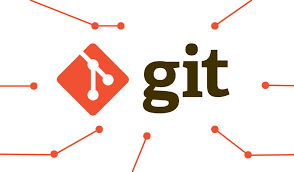

Git es un sistema de control de versiones distribuido. Su función principal es registrar todos los cambios realizados en el código de un proyecto a lo largo del tiempo, permitiendo volver a estados anteriores (como una máquina del tiempo) y facilitando el trabajo colaborativo sin perder información
| Comandos | Descripción |
|---|---|
| git init | Sirve para iniciar el git, creando una carpeta oculta llamada ".git" |
| git config user.name git config user.name |
es para visualizar el nombre actual que está configurado. es para visualizar el email que esta configurado |
| git add . | Sirve para pasar los archivos a zona de preparación o selecionarlos. El punto nos permite seleccionar TODOS los archivos |
| git status | Bis muestra el estado de los archvios, los que estan en zona de preparación aparecen en verde y los que no esten en esa zona en rojo |
GitHub es una plataforma en la nube que funciona como un "Google Drive" para programadores. Aloja proyectos de software y utiliza el sistema de control de versiones Git, permitiendo a los desarrolladores guardar su código, colaborar de forma remota y llevar un registro de cada cambio realizado.